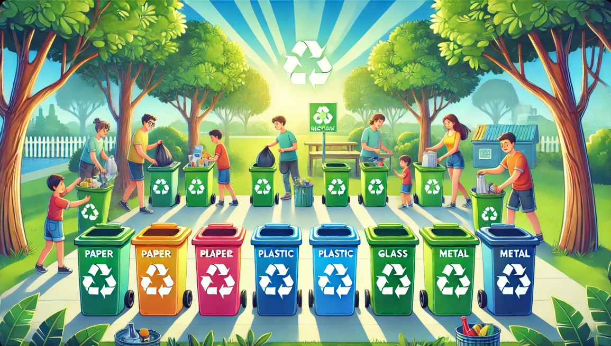

Importancia del reciclaje
El reciclaje es uno de los pilares fundamentales para la sostenibilidad del planeta. Cada año, más de 2.000 millones de toneladas de residuos se generan a nivel mundial, y gran parte de ellos termina en vertederos, océanos o incineradoras, liberando gases de efecto invernadero y toxinas. La economía circular propone un modelo donde los materiales se mantienen en uso el mayor tiempo posible, reduciendo la extracción de recursos naturales y la contaminación.
Beneficios clave del reciclaje:
- Ahorro de energía: reciclar aluminio ahorra un 95% de la energía necesaria para producirlo desde la bauxita.
- Reducción de emisiones: cada tonelada de papel reciclado evita la emisión de 1,5 toneladas de CO₂.
- Conservación de agua: reciclar plástico reduce el consumo de agua en un 70% comparado con la producción virgen.
- Protección de la biodiversidad: menos minería y tala de árboles significa hábitats más sanos para la fauna y flora.
Según datos de National Geographic, solo el 9% de todo el plástico producido desde 1950 ha sido reciclado. El resto se ha incinerado, depositado en vertederos o ha terminado en el entorno natural. Este dato nos muestra que reciclar no es suficiente: debemos combinar la reducción, la reutilización y el rediseño de productos para lograr un cambio real.
🌍 “El reciclaje es la última opción después de reducir y reutilizar” — National Geographic.
Tipos de residuos y contenedores
Conocer el código de colores de los contenedores facilita una correcta separación de residuos en casa, en el trabajo o en la vía pública. Cada color representa un tipo de material distinto:
🟡 Amarillo
Envases plásticos, latas, bricks y materiales metálicos ligeros.
🔵 Azul
Papel, cartón, periódicos, revistas y cajas de cartón limpias.
🟢 Verde
Vidrio: botellas, frascos y envases de cristal sin tapas.
🟤 Marrón
Residuos orgánicos: restos de comida, cáscaras y materia compostable.
Además de estos cuatro grupos principales, existen puntos especiales para residuos electrónicos (RAEE), pilas y baterías, aceite usado y residuos voluminosos (muebles, colchones), que no deben mezclarse con la basura común porque requieren un tratamiento específico.
Consejos para cuidar el medio ambiente
Pequeñas acciones cotidianas pueden marcar una gran diferencia. Aquí tienes una guía práctica para incorporar hábitos sostenibles en tu día a día:
- Separa en casa: utiliza contenedores de colores (amarillo para plásticos y metales, azul para papel y cartón, verde para vidrio, marrón para orgánico).
- Reduce el consumo de plásticos de un solo uso: opta por botellas reutilizables, bolsas de tela y envases retornables.
- Recicla aparatos electrónicos: lleva tus dispositivos viejos a puntos limpios o tiendas que acepten residuos electrónicos.
- Reutiliza el agua: instala sistemas de captación de agua de lluvia para riego y limpieza exterior.
- Apoya marcas sostenibles: elige productos con certificaciones ecológicas (FSC, EU Ecolabel, Cradle to Cradle).
- Composta tus residuos orgánicos: convierte cáscaras, restos de frutas y verduras en abono natural para tus plantas.
- Repara en lugar de desechar: da una segunda vida a la ropa, muebles y electrodomésticos.
- Educa y comparte: habla con amigos y familiares sobre la importancia de reciclar y cuidar el entorno.
🌎 “No heredamos la Tierra de nuestros antepasados, la tomamos prestada de nuestros hijos”
Galería: acciones por el planeta
Algunas imágenes que ilustran distintas formas de cuidar el medio ambiente:


Multimedia educativa
▶️ Video “El viaje del reciclaje”
⏯️ Haz clic en play para ver el documental (archivo: video.mp4)
📽️ Duración aproximada: 4 min · Producción: Planeta Vivo
Integrantes del proyecto
Este sitio ha sido desarrollado como parte de una iniciativa para promover la conciencia ecológica, inspirado en los reportajes y la línea editorial de National Geographic.